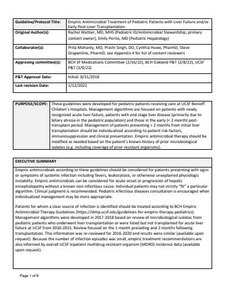

Hosted on idmp.ucsf.edu, no login. 12 pages, 972 KB
PURPOSE:
These guidelines were developed for pediatric patients receiving care at UCSF Benioff Children’s Hospitals. Management algorithms are focused on patients with newly recognized acute liver failure, patients with end stage liver disease (primarily due to biliary atresia in the pediatric population) and those in the early (< 2 month) post-transplant period. Management of patients presenting > 2 months from initial liver transplantation should be individualized according to patient risk factors, immunosuppression and clinical presentation. Empiric antimicrobial therapy should be modified as needed based on the patient’s known history of prior microbiological isolates (e.g. including coverage of prior resistant organisms).
GUIDELINES:
Refer to the following algorithms for antibiotic selection in pediatric patients with suspected infection in the setting of liver failure or within 2 months following liver transplantation:
Empiric antimicrobials according to these guidelines should be considered for patients presenting with signs or symptoms of systemic infection including fevers, leukocytosis, or otherwise unexplained physiologic instability. Empiric antimicrobials can be considered for acute onset or progression of hepatic encephalopathy without a known non-infectious cause. Individual patients may not strictly “fit” a particular algorithm. Clinical judgment is recommended. Pediatric infectious diseases consultation is encouraged when individualized management may be more appropriate.
Patients for whom a clear source of infection is identified should be treated according to BCH Empiric Antimicrobial Therapy Guidelines. Management algorithms were developed in 2017-2018 based on review of microbiological isolates from pediatric patients who underwent liver transplantation or were listed but not transplanted for acute liver failure at UCSF from 2010-2015. Review focused on the 1 month preceding and 2 months following transplantation. This information was re-reviewed for 2016-2020 and results were similar (available upon request). Because the number of infection episodes was small, empiric treatment recommendations are also informed by overall UCSF inpatient multidrug-resistant organism (MDRO) incidence data (available upon request).
Evaluation of suspected infection
- For all patients, a careful physical examination is recommended with attention to sites of central venous catheters and other invasive devices, identification of focal sources of bacterial infection, or skin/mucosal lesions that may be seen with viral infection.
- Follow the algorithms above for diagnostic testing that is generally recommended based on the patient’s scenario.
- Other evaluation should be directed based on suspected focus of infection. Therapy should also be modified based on any suspected focal source of infection.
Empiric treatment for suspected infection in previously healthy patients with acute liver failure (ALF)
- Empiric therapy directed against community-onset etiologies of sepsis is recommended for newly admitted patients with suspected infection.
- Acyclovir should be routinely included for neonates with ALF, until herpes simplex virus (HSV) infection is excluded, as disseminated HSV is a common cause of ALF in this age group.
- Acyclovir should be considered, pending exclusion of HSV viremia, for pediatric patients with ALF who present with fevers and/or severe clinical illness.
- Available testing for HSV has good sensitivity and rapid turnaround time. In general, acyclovir can be discontinued based on negative HSV PCR testing. However, in neonates, ID consultation is recommended to ensure that the HSV evaluation is complete before discontinuing acyclovir.
- If the patient develops progression or new signs of infection while hospitalized, therapy should be broadened to cover healthcare-associated organisms, based on the BCH antibiograms. Management should switch to the hospital-acquired infection algorithm.
Empiric gram-positive therapy
- The frequency of vancomycin-resistant Enterococcus faecium (VRE) in the BCH population including pediatric patients with ALF or liver transplant recipients is substantially lower than in the adult population. Therefore, empiric treatment with linezolid is not routinely recommended in pediatric patients, unless there is a known history of VRE, or decompensation despite empiric vancomycin treatment.
- Use of vancomycin concurrently with piperacillin-tazobactam is associated with an increased risk for nephrotoxicity compared to use of vancomycin concurrently with other broad spectrum beta-lactam antibiotics (e.g. cefepime). This difference in risk is not observed during short durations of concurrent therapy (<= 72 hours). Therefore, when vancomycin is empirically started, it should be discontinued within 48 hours if no resistant gram-positive infection is identified. If vancomycin is indicated for a longer duration, the remaining regimen should be reviewed to either discontinue concurrent piperacillin-tazobactam, if no longer indicated, or switch to an alternative beta-lactam antibiotic.
- If therapy is broadened due to decompensation but an antimicrobial resistant organism is not identified, the antimicrobial choice should be re-evaluated within 48-72 hours to plan de-escalation.
Empiric gram-negative therapy
- Because it is usually active against the isolated pathogens in the BCH patients with ALF or following liver transplantation, piperacillin-tazobactam is recommend as the mainstay of therapy for suspected sepsis and hospital-acquired infection in pediatric patients with ALF or post-transplantation.
- Therapy should be modified if the patient has known prior resistant infections, or if the patient develops progressive decompensation despite empiric piperacillin-tazobactam treatment.
- If therapy is broadened due to decompensation but an antimicrobial resistant organism is not identified, the antimicrobial choice should be re-evaluated within 48-72 hours to plan de-escalation.
Empiric anaerobic therapy
- Antimicrobial therapy with anaerobic activity is recommended for suspected intra-abdominal infection.
- Piperacillin-tazobactam and meropenem both have excellent anaerobic activity, therefore addition of other antibiotics for this purpose is not recommended.
Empiric antifungal therapy
- Empiric antifungal therapy with an echinocandin (micafungin or caspofungin) is recommended in patients ALF or post liver transplantation if they develop evidence of severe sepsis or septic shock.
- An echinocandin is not routinely recommended for fever alone without severe sepsis or septic shock, given the overall low incidence of fungal infection.
Empiric antiviral therapy
In addition to recommendations provided above for specific patients with ALF to undergo evaluation for HSV and empiric treatment with acyclovir, patients with suspected influenza-like illness during influenza season should receive empiric oseltamivir until influenza is excluded.
BACKGROUND:
Appropriate use of antimicrobial therapy is especially important for pediatric patients with liver failure and following liver transplantation (LT) because of their increased risk for infection and related complications. In particular, infections with multidrug resistant organisms (MDROs) are increasingly reported among children with liver failure or following LT and are associated with higher complication rates. Antimicrobial stewardship including selection of empiric treatment based on local antimicrobial susceptibility data, following consistent pathways, and appropriately targeting treatment to the cause of infection has been identified as a priority for solid organ transplantation practice [1,2].
Local guidelines adapted specifically for pediatric patients and are necessary because pediatric patients with liver failure or post-LT differ from their adult counterparts. Causes of liver failure, indications for LT, and epidemiology of infections differ in pediatric vs. adult patients. Some pediatric LT recipients are comparatively “antibiotic-naïve” and thus at lower risk for MDROs. For those patients at risk for MDROs due to significant healthcare exposure, antimicrobial resistance patterns differ in pediatric vs. adult sites of care. Antimicrobial selection should account for these differences to avoid further selection of MDROs and minimize the burden of antimicrobial-related adverse events and development of breakthrough infections such as Clostridioides difficile infection and invasive candidiasis.
SUPPORTING EVIDENCE:
Infectious complications in pediatric patients with acute liver failure
Acute liver failure (ALF) in children confers increased risk for infection, partly due to directly impaired immune function, with additional risk added by healthcare exposure and invasive support devices.
- Viral infections: Certain treatable infections (particularly herpes simplex virus, HSV) may be the primary cause of ALF. In a multi-site study of viral testing in infants and children with acute liver failure, HSV was identified in 25.2% of tested patients aged 0-6 months, and 5.6% of tested patients aged > 6 months [3]. American Gastroenterological Association guidelines recommend testing for HSV in the setting of ALF and treatment if infection is identified [4]. In the context of the coronavirus disease 2019 (COVID-19) pandemic it is also important to recognize that SARS-CoV-2 infection has been associated with development of ALF in individuals with previously compensated chronic liver disease, so should be incorporated into testing approaches [5]. Other viruses potentially associated with ALF are incorporated into a separate and well-established diagnostic algorithm for new ALF evaluation.
- Bacterial and fungal infections: The most commonly identified non-viral sources of infection in children with ALF include bloodstream infection (9%), lower respiratory tract infection (7-15%), and urinary tract infection (12-16%); in one study most infections were found to be nosocomially acquired [6,7]. Causative organisms vary depending on setting and duration of hospitalization and include aerobic gram-negative bacteria, gram-positive bacteria, and Candida species, though infections due to Candida have been noted to occur later than those due to bacteria [6,8].
- Antimicrobial prophylaxis: Though some centers have utilized prophylactic antibiotics in patients with ALF, antibiotic prophylaxis has not been shown to improve outcome of patients with ALF and is not routinely recommended in consensus guidelines of the American Association for the Study of Liver Diseases (AASLD), or the European Association for the Study of the Liver (EASL), or the Pediatric Gastroenterology Chapter of the Indian Academy of Pediatrics (developed specifically for children with ALF) [9–11].
Infectious complications in pediatric patients with biliary atresia
Biliary atresia (BA) is the most common cause of chronic liver failure in children and the most common indication for pediatric liver transplantation.
- Ascending cholangitis: Children with BA are at risk for ascending cholangitis, predominantly caused by gram-negative bacteria [12,13]. Initial episodes tend to occur with more antimicrobial-susceptible organisms, but patients may develop infections with antimicrobial-resistant organisms with subsequent episodes and with long-term antibiotic prophylaxis [12,13]. Patients approaching transplantation with prior history of recurrent cholangitis may be highly antibiotic-exposed and with known prior history of MDROs.
- Bloodstream infections: Patients with BA who receive parenteral nutrition via central venous catheters are at risk for bloodstream infections (BSI), predominantly due to enteric gram-negative bacteria, Staphylococcus species, and Candida species [14].
- Spontaneous bacterial peritonitis: This is a consideration in children with BA or chronic liver disease who have ascites, E. coli and Klebsiella are the most commonly identified pathogens [15,16].
Infectious complications in pediatric liver transplant recipients
- Infection frequency and risk factors: Approximately half of pediatric LT recipients develop bacterial infection during the early postoperative phase (first 1 month following transplantation) [17]. Identified risk factors include pre-existing biliary atresia, young age (< 1 year), small body size (<10kg), and surgical complexity (intraoperative transfusion requirement, cold ischemia time, abdominal wall closure with prosthetic mesh) [18–22]. Increased infection risk has also been associated with duration of invasive devices such as central venous catheters, and need for re-operation [21,23]. Microbiology differs by center, but frequently identified organisms include Enterococcus species, Staphylococcus species, E. coli, Klebsiella, Pseudomonas, and Candida species [18,20–22,24–27].
- Intra-abdominal infection: The most frequently identified focal source following pediatric LT is intra-abdominal infection (IAI) [18–20,28]. American Society of Transplantation Infectious Diseases Community of Practice guidelines for management of IAI recommend that empiric treatment consist of gram-positive and broad-spectrum aerobic and anaerobic gram-negative coverage, with exact selection depending on scenario and severity of illness [29]. Empiric regimens are recommended to be tailored to the pathogens with which the patient is known to be colonized, potential side effect profile, drug-drug interactions, and hospital and/or unit-specific antibiogram. The guidelines recommend consideration of empiric therapy for MDR gram-negative organisms in patients with known colonization, those with septic shock who are hospitalized at institutions with high rates of these organisms, or in the setting of an active outbreak. Administration of an empiric anti-VRE agent may be considered in patients with VRE colonization and hemodynamic instability. Empiric antifungal therapy with an echinocandin can be considered on a case-by-case basis, especially in patients with bowel leaks, perforations, and septic shock of unclear origin.
- Multidrug resistant organisms: Pediatric LT recipients are at risk for infection due to MDROs and this risk has been associated with being colonized with such organisms before LT, prior exposure to broad spectrum antimicrobials, and duration of intensive care preceding LT. Infection with MDROs (vs. more susceptible organisms) have been associated with a higher likelihood of developing severe sepsis or septic shock, and increased need for support such as mechanical ventilation [21,22,28,30]. Thus, it is important to minimize selective pressure on the patient’s microbial flora to the extent possible prior to LT. The frequency of infections due to MDROs and the specific MDROs involved vary by center with approximate proportions of MDRO among all infectious episodes ranging from 7-62% [17,28,30]. Because of the variability in MDRO epidemiology by center, it is important to consider both individual patient and local population antimicrobial isolates when selecting antimicrobial therapy.
- Invasive fungal diseases: Risk factors specific to invasive fungal disease (predominantly Candida spp) post-LT include higher intraoperative transfusion needs, prolonged use of CVC, prolonged IV antibiotic treatment, surgical complications (abdominal hemorrhage, vascular thrombosis or bile leak), pulse steroid treatment and living donor liver transplantation [31].
DEVELOPMENT & REVIEW:
Initiated 2018. Content developed by Pediatric Antimicrobial Stewardship Program in collaboration with Pediatric Hepatology Service, reviewed by Pediatric ID, Abdominal Transplant Surgery, Pediatric Clinical Pharmacy representatives.
Approved by UCSF Committee on Pharmacy and Therapeutics 8/31/18. Updated 1/12/22 by BCH Pediatric Antimicrobial Stewardship Programs with contribution by BCH Pediatric Hepatology services and content review by representatives of Pediatric Critical Care, Pediatric Clinical Pharmacy and Abdominal Transplant Surgery. Re-approved by UCSF Committee on Pharmacy and Therapeutics 3/9/22. Please direct questions about guideline content to rachel.wattier@ucsf.edu.
REFERENCES:
1. Bio LL, Schwenk HT, Chen SF, et al. Standardization of post-operative antimicrobials reduced exposure while maintaining good outcomes in pediatric liver transplant recipients. Transpl. Infect. Dis. 2021; 23:e13538.
2. So M, Hand J, Forrest G, et al. White paper on antimicrobial stewardship in solid organ transplant recipients. Am. J. Transplant. 2021;
3. Schwarz KB, Olio DD, Lobritto SJ, et al. An analysis of viral testing in non-acetaminophen pediatric acute liver failure. J Pediatr Gastroenterol Nutr 2014; 59:616–623.
4. Flamm SL, Yang Y-X, Singh S, Falck-Ytter YT, AGA Institute Clinical Guidelines Committee. American Gastroenterological Association Institute guidelines for the diagnosis and management of acute liver failure. Gastroenterology 2017; 152:644–647.
5. Kehar M, Ebel NH, Ng VL, et al. Severe acute respiratory syndrome coronavirus-2 infection in children with liver transplant and native liver disease: an international observational registry study. J. Pediatr. Gastroenterol. Nutr. 2021; 72:807–814.
6. Godbole G, Shanmugam N, Dhawan A, Verma A. Infectious complications in pediatric acute liver failure. J. Pediatr. Gastroenterol. Nutr. 2011; 53:320–325.
7. Bolia R, Srivastava A, Marak R, Yachha SK, Poddar U. Prevalence and impact of bacterial infections in children with liver disease - a prospective study. J. Clin. Exp. Hepatol. 2018; 8:35–41.
8. Mekala S, Jagadisan B, Parija SC, Lakshminarayanan S. Surveillance for infectious complications in pediatric acute liver failure - a prospective study. Indian J. Pediatr. 2015; 82:260–266.
9. Lee WM, Stravitz RT, Larson AM. Introduction to the revised American Association for the Study of Liver Diseases Position Paper on acute liver failure 2011. Hepatology 2012; 55:965–967.
10. Clinical practice guidelines panel, Wendon, J, Panel members, et al. EASL Clinical Practical Guidelines on the management of acute (fulminant) liver failure. J. Hepatol. 2017; 66:1047–1081.
11. Pediatric Gastroenterology Chapter of Indian Academy of Pediatrics, Bhatia V, Bavdekar A, Yachha SK, Indian Academy of Pediatrics. Management of acute liver failure in infants and children: consensus statement of the pediatric gastroenterology chapter, Indian academy of pediatrics. Indian Pediatr. 2013; 50:477–482.
12. Ecoffey C, Rothman E, Bernard O, Hadchouel M, Valayer J, Alagille D. Bacterial cholangitis after surgery for biliary atresia. J. Pediatr. 1987; 111:824–829.
13. Wu ET, Chen HL, Ni YH, et al. Bacterial cholangitis in patients with biliary atresia: impact on short-term outcome. Pediatr. Surg. Int. 2001; 17:390–395.
14. Triggs ND, Beer S, Mokha S, et al. Central line-associated bloodstream infection among children with biliary atresia listed for liver transplantation. World J. Hepatol. 2019; 11:208–216.
15. Vieira SMG, Schwengber FP, Melere M, Ceza MR, Souza M, Kieling CO. The first episode of spontaneous bacterial peritonitis is a threat event in children with end-stage liver disease. Eur. J. Gastroenterol. Hepatol. 2018; 30:323–327.
16. Singh SK, Poddar U, Mishra R, Srivastava A, Yachha SK. Ascitic fluid infection in children with liver disease: time to change empirical antibiotic policy. Hepatol. Int. 2020; 14:138–144.
17. Dohna Schwake C, Guiddir T, Cuzon G, et al. Bacterial infections in children after liver transplantation: A single-center surveillance study of 345 consecutive transplantations. Transpl. Infect. Dis. 2020; 22:e13208.
18. Bouchut JC, Stamm D, Boillot O, Lepape A, Floret D. Postoperative infectious complications in paediatric liver transplantation: a study of 48 transplants. Paediatr. Anaesth. 2001; 11:93–98.
19. Cakir M, Arikan C, Akman SA, et al. Infectious complications in pediatric liver transplantation candidates. Pediatr. Transplant. 2010; 14:82–86.
20. Nafady-Hego H, Elgendy H, Moghazy WE, Fukuda K, Uemoto S. Pattern of bacterial and fungal infections in the first 3 months after pediatric living donor liver transplantation: an 11-year single-center experience. Liver Transpl. 2011; 17:976–984.
21. Pouladfar G, Jafarpour Z, Malek Hosseini SA, Firoozifar M, Rasekh R, Khosravifard L. Bacterial infections in pediatric patients during early post liver transplant period: A prospective study in Iran. Transpl. Infect. Dis. 2019; 21:e13001.
22. Béranger A, Capito C, Lacaille F, et al. Early bacterial infections after pediatric liver transplantation in the era of multidrug-resistant bacteria: nine-year single-center retrospective experience. Pediatr. Infect. Dis. J. 2020; 39:e169–e175.
23. Selimoğlu MA, Kaya S, Güngör Ş, Varol Fİ, Gözükara-Bağ HG, Yılmaz S. Infection risk after paediatric liver transplantation. Turk. J. Pediatr. 2020; 62:46–52.
24. García S, Roque J, Ruza F, et al. Infection and associated risk factors in the immediate postoperative period of pediatric liver transplantation: a study of 176 transplants. Clin. Transplant. 1998; 12:190–197.
25. Saint-Vil D, Luks FI, Lebel P, et al. Infectious complications of pediatric liver transplantation. J. Pediatr. Surg. 1991; 26:908–913.
26. Duncan M, DeVoll-Zabrocki A, Etheredge HR, et al. Blood stream infections in children in the first year after liver transplantation at Wits Donald Gordon Medical Centre, South Africa. Pediatr. Transplant. 2020; 24:e13660.
27. Møller DL, Sørensen SS, Wareham NE, et al. Bacterial and fungal bloodstream infections in pediatric liver and kidney transplant recipients. BMC Infect. Dis. 2021; 21:541.
28. Phichaphop C, Apiwattanakul N, Techasaensiri C, et al. High prevalence of multidrug-resistant gram-negative bacterial infection following pediatric liver transplantation. Medicine (Baltimore) 2020; 99:e23169.
29. Haidar G, Green M, American Society of Transplantation Infectious Diseases Community of Practice. Intra-abdominal infections in solid organ transplant recipients: guidelines from the American Society of Transplantation Infectious Diseases Community of Practice. Clin. Transplant. 2019; 33:e13595.
30. Alcamo AM, Alessi LJ, Vehovic SN, et al. Severe sepsis in pediatric liver transplant patients: the emergence of multidrug-resistant organisms. Pediatr. Crit. Care Med. 2019; 20:e326–e332.
31. Pasternak Y , Rubin S, Bilavsky E, et al. Risk factors for early invasive fungal infections in paediatric liver transplant recipients. Mycoses 2018; 61:639–645.